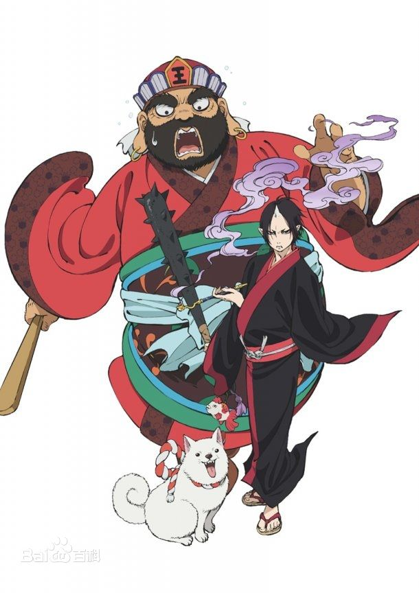
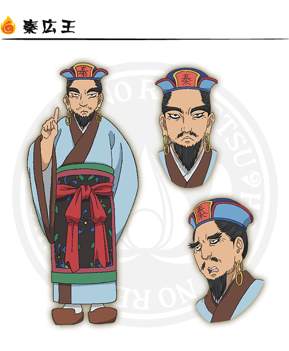

マヤさん、ようこそ！
橋本先生、マヤさん！メリークリスマス！あけましておめでとうございます。
主人公
主人公は「鬼灯」という鬼です。閻魔大王の下で二代目の第一補佐官を務める鬼です。
秦広王
地獄において亡者を裁く裁判官です。十王の中の一人です。
秦広王（しんこうおう）は初七日に裁く裁判官です。彼の仕事は三途の川の手前で罪に対する嘘の有無を審議をしていることです。
初江王
初江王（しょこうおう）は二七日に裁く裁判官で秦広王の裁きを受けた亡者が、その裁きに応じた努力で三途の川を渡ったかを審議することに加え、生前に関わり合いのあったベットが呼ばれ、その亡者について証言をします。
宋帝王
宋帝王（そうだいおう）は三七日に裁く裁判官です。邪淫罪の疑いを審議します。

五官王
五官王（ごかんおう）は四七日に裁く裁判官です。亡者の罪の重さを量ります。
泰山王
泰山王（たいざんおう）は七七日に裁く裁判官です。本来は閻魔王の裁きで地獄行きを宣告された上でさらに詳しく八大地獄のどこへ亡者が流刑されるか決まります。
平等王
平等王（びょうどうおう）は百か日に裁く裁判官です。ここからは再審となります。
都市王
都市王（としおう）は一周忌に裁く裁判官です。
五道転輪王
五道転輪王（ごどうてんりんおう）は三回忌に裁く裁判官です。
イザナミ
イザナミはかつて黄泉を統治していた女王です。「あの世的歴史観」では最初に日本の国作りを行った神の一柱です。夫のイザナキに約束を破れた憤怒し、彼の国（現世）の者を一日千人殺すという呪いをかけたと言いました。
石長姫
石長姫（いわながひめ）は、日本神話に登場する女神です。オオヤマツミの娘で、木花咲耶姫のお姉さんです。木花咲耶姫とともにニニギの元に嫁ぐが、石長姫は醜かったことから父の元に送り返されました。
木花咲耶姫
木花咲耶姫（このはなさくやひめ）は、日本神話に登場する女神です。オオヤマツミの娘で、姉に石長姫がいます。ニニギの妻として、ホデリとホスセリとホオリを生みました。
八岐大蛇
八岐大蛇（やまたのおろち）は日本神話に登場する伝説の生物です。「洪水の化身」などと解釈されることがあります。お酒が大好きです。
金魚草
鬼灯が品種改良した観賞用ベットです。「動植物」に分類されます。現世の実在の「金魚草」とは異なり、花は金魚そのものです。想像したものですから、実際にありません。
妲己
妲己は古代中国で王を誘惑し、国を傾けた九尾の狐です。
桃太郎
桃太郎（ももたろう）は日本のおとぎ話の一つの主人公です。「桃太郎」が、お婆さんからきびだんごを貰って、イヌ、サル、キジを従えて、鬼ヶ島まで鬼を退治しに行く物語です。